Klark John Cabungcal
AI automations that answer leads, book calls and cut admin hours
I build n8n, Make.com and Zapier workflows with AI built in. New leads get an instant reply, appointments book themselves, invoices get chased and support emails get sorted, so your team can spend its time on clients instead of copy-paste.
Watch my 2-minute introClick any project below to expand the full workflow
Projects
Automations I've built for clients and for myself. Open any card to see the problem, what I built and the result.
Advanced Appointment Setter
An AI-powered appointment booking assistant that takes a form submission (from Jotform) and fully automates checking availability, booking the calendar, logging records, and emailing the customer, with no human touching it unless something goes wrong.


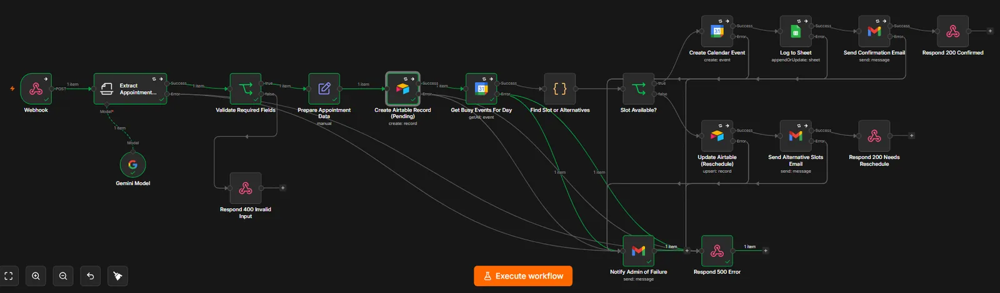
- 1. Trigger (Webhook): Jotform posts form submissions to this webhook, using Jotform's auto-generated plain-English summary of all form answers.
- 2. Extract Appointment Details (Gemini AI): An AI “Information Extractor” reads that raw text and pulls out structured fields (name, email, address, phone, date and time), auto-converting natural language like “2pm” into 24-hour format.
- 3. Validate Required Fields: Checks that name, a valid email, and a date were actually extracted. If not, the customer gets an immediate error asking them to resubmit: no bad data enters the system.
- 4. Prepare Appointment Data: Builds a clean record with a 1-hour time slot and marks status as “Pending.”
- 5. Create Airtable Record (Pending): Logs the request immediately, so there's a record even before availability is confirmed.
- 6. Check Google Calendar availability: Pulls all events for that business day (9am-5pm) and checks for overlaps with the requested slot.
- 7. Branch: Is the slot available? Yes → creates the calendar event, logs to Sheets, emails a confirmation, returns 200. No → marks “Needs Reschedule,” emails up to 3 alternative times, returns 200 needs_reschedule.
- 8. Error handling: Every external step has a fallback: failures email the admin directly and return a 500, so nothing fails silently.
- Zero manual scheduling work: a lead fills out a form and either gets booked or gets alternatives, instantly, 24/7
- No double-booking: actively checks the calendar before confirming
- Full audit trail: every request lands in Airtable, successful bookings also land in a Google Sheet
- Graceful degradation: bad input is rejected politely; system failures alert the admin directly instead of losing the customer's request
E-Commerce Order Processing
Triggered by a webhook, then fans out to three parallel actions: notifying the customer, the fulfillment team, and inventory tracking simultaneously instead of one after another.

- Trigger: Order Received (Webhook): Listens for POST requests at /order-received, where a Jotform submission gets sent via Jotform's webhook integration.
- Map Jotform Fields (Code node): Jotform's payloads are messy: field names vary depending on how the form was built, and Jotform also sends a “pretty string” fallback. This node normalizes everything into a clean object: customer name, email, order ID, items, total, and shipping address.
- Fan-out to three parallel branches:
- → Send Confirmation Email (Gmail): Sends an HTML order-confirmation email with order ID, items, and total.
- → Send Packing Instructions (Slack → #inventory): Posts order details plus a packing checklist for the fulfillment team.
- → Update Inventory (Google Sheets → append): Logs the order as a new row in the tracking spreadsheet.
- Handles inconsistent Jotform field naming with a resilient lookup + “pretty string” fallback
- Three actions fire in parallel instead of a slow sequential chain
- Retries 3x on every external call before escalating to a Slack failure alert
Invoice & Payment Automation
Manual invoice intake and collections follow-up is a classic small-business time sink. This workflow replaces that entire chain end to end.

Freelancers, small agencies, or an accounts-payable/receivable function at a small company, anyone processing a steady trickle of invoices without a full accounting department behind them.
| Manual task | Automated by |
|---|---|
| Opening the invoice, reading it, typing details into a spreadsheet | JotForm intake + OCR cross-check + auto-logging |
| Emailing the client “we got it” | Confirmation email node |
| Telling the team a new invoice came in | Slack notification |
| Remembering to check back in a week | Wait node + scheduled re-check |
| Writing (and remembering to send) a reminder | Auto-generated reminder email |
| Checking again before escalating | Second payment re-check before final notice |
| Flagging genuinely overdue invoices to a human | Slack escalation alert |
- Time saved per invoice: even a conservative 5-10 minutes of manual entry plus follow-up overhead adds up fast: this turns that into a one-time setup cost
- Faster cash collection: reminders go out exactly on schedule, every time
- Fewer errors: OCR cross-checking catches mismatches, and a payment re-check before escalation avoids dunning someone who already paid
- Scales without added headcount: processing invoice #50 costs the same as invoice #1
Lead Generation & Sales Automation Pipeline
Built a fully automated inbound lead scoring system using n8n that processes every new email, qualifies it with a local AI model, and triggers the right sales actions, all without manual review.


Monitors a Gmail inbox, extracts lead intelligence, runs it through a locally-hosted Llama 3.2 model via Ollama using BANT qualification criteria, assigns a score (1-10) and tier (hot/warm/cold), then automatically creates contacts in HubSpot, sends Slack alerts to the sales team, and dispatches personalized email replies, all within seconds.
- Zero cloud AI cost: runs entirely on local hardware via Ollama
- BANT-based scoring prompt evaluates budget signals, decision-maker indicators, urgency, and domain type
- Three-tier routing eliminates manual triage for the sales team
- Auto-replies personalized per tier with appropriate CTAs
Veo AI Video Generator: Auto-Post to YouTube & Facebook
One click. Two AI videos. Posted everywhere. Automatically. This fully automated system uses Google Veo 3.1 AI to create short videos from scratch, then instantly publishes them to YouTube and Facebook at the same time.

| Feature | Details |
|---|---|
| AI Script Writer | Gemini 2.5 Flash writes optimized prompts & titles |
| Dual Clip Generation | 2 unique 8-second vertical clips (9:16 reels format) |
| AI Audio Included | Videos come with generated audio: no editing needed |
| Smart Retry System | Auto-retries if AI filters or rejects content |
| Reels-Ready Format | Vertical 1080×1920 |
| Dual Publishing | Posts to YouTube + Facebook in the same moment |
- 0:00 · Workflow starts
- 0:05 · Gemini writes scripts & titles
- 0:30-2:00 · Veo generates Clip 1
- 2:30-4:00 · Veo generates Clip 2
- 4:05 · Clips merged into final video
- 4:10 · Published to YouTube + Facebook
Total time: ~4-5 minutes from click to live post.
- Automatically retries if Google's AI safety filter blocks content
- Automatically regenerates scripts if video generation fails
- Polls every 30 seconds to check video status
Lead Capture & AI Qualification: Gmail → Google Sheets
Inbound leads arrive by email: contact-form notifications, quote requests, general enquiries. This automation captures every qualifying email, de-duplicates it, uses AI to score and enrich it, logs it to structured sheets, escalates the hottest leads, and auto-replies, with zero manual triage.
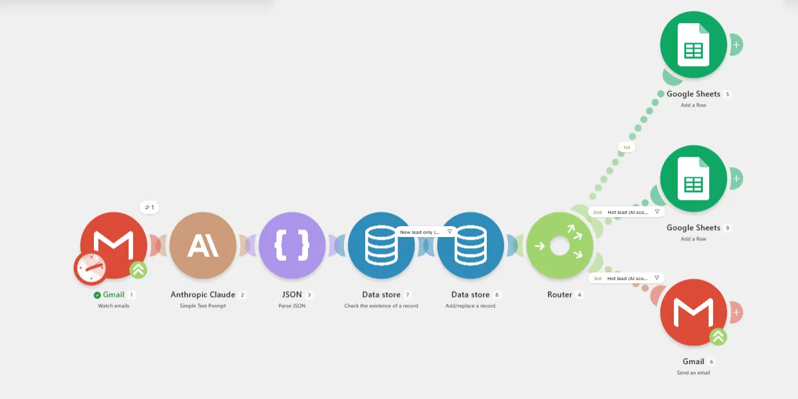
- 1. Watch emails (Gmail trigger): Polls the inbox on a 15-minute schedule, marking fetched messages as read so they're never processed twice.
- 2. AI qualification (Claude via Make AI): Each email is passed to Claude Haiku 4.5, returning a JSON object: company, phone, category, urgency, a 0-100 lead score, and a summary.
- 3. Parse JSON: The AI's response is parsed into individual fields.
- 4. Check Data Store (de-duplication): The sender's email is looked up in a “Known Leads” data store: if seen before, the flow stops.
- 5. Record in Data Store: New senders are recorded for future recognition.
- 6. Router: Fans the flow into three independent branches.
- 7. Log all leads (Google Sheets): Every new lead is appended to the main “Leads” sheet.
- 8. Escalate hot leads (Google Sheets): Score ≥ 70 also goes to a “Hot Leads” priority sheet.
- 9. Smart auto-reply (Gmail): Hot leads receive an immediate, prioritized acknowledgement.
Fearless: Customer Support & Growth Automation
An automated Make.com worker that watches a customer support inbox and handles incoming emails without manual effort: reading, replying, and logging every message, while the same reply also does light, on-brand selling.
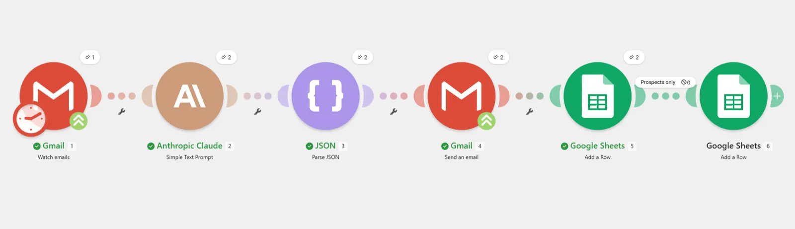
| Step | What happens |
|---|---|
| 1. Watch inbox | Scans the Primary inbox for customer-type emails. Picks up to two new messages per cycle. |
| 2. AI reads & writes | Claude classifies the email, reads sentiment, writes a warm on-brand reply, and decides which offer to attach. |
| 3. Auto-reply | The reply is emailed straight back automatically, usually within minutes. |
| 4. Log everything | Customer, request, sentiment, and reply are recorded to a Support Log spreadsheet. |
| 5. Capture leads | Potential buyers are added to a Leads & Prospects sheet for follow-up. |
- Curious shopper → answered warmly, plus a first-order discount code. Logged as a lead.
- Happy customer → thanked, asked for a review, given a referral code.
- Upset customer → sincere apology, flagged for human follow-up, offered a win-back discount.
- Speed and coverage: friendly, on-brand answers within minutes, day or night
- Growth, not just maintenance: every email becomes a small revenue lever
- A compounding asset: Leads sheet builds an outreach list, Support Log surfaces recurring issues
- Built-in safeguard: complaints are flagged “needs human,” AI never invents refunds or firm promises
Client Pipeline Automation
A lightweight CRM plus a sales-and-delivery assistant, built entirely around a single spreadsheet. Updating a single Status dropdown triggers the entire next step automatically: no Gmail, no Drive, no copy-pasting emails.
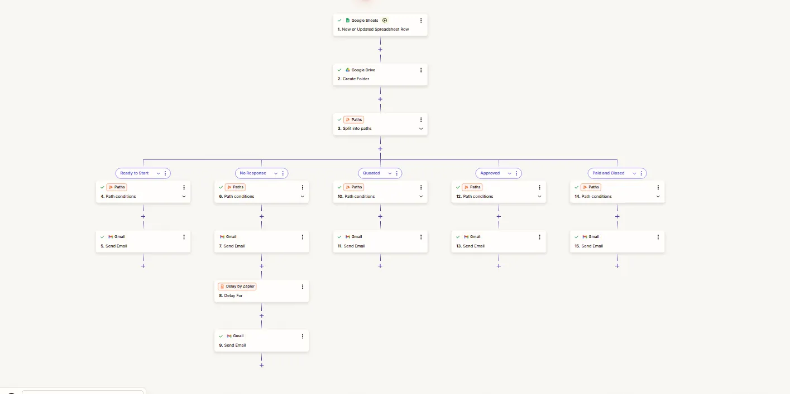
- 1. Trigger: New or Updated Spreadsheet Row (Google Sheets): Fires whenever a client row is added or its Status is changed.
- 2. Create Folder (Google Drive): A folder named after the client and project is created automatically on each run.
- 3. Split into Paths (Zapier Paths): The Status value routes the row down one of five branches.
- → Ready to Start: Sends a kickoff email.
- → No Response: Sends a check-in, waits 3 days, then auto-sends a follow-up.
- → Quoted: Sends the exact quote amount pulled from the sheet.
- → Approved: Sends a confirmation email.
- → Paid and Closed: Sends a thank-you email.
- No lead goes cold: most quotes die simply because nobody followed up
- Every client gets a fast, consistent, professional response at each stage
- Quoting, onboarding, and closing become one-click actions on a spreadsheet
- Scales cheaply: the workload of writing status emails stays at zero
Automated Sales Call Tracker & Dashboard
A production automation built for a real client (Willers Coaching): an automated pipeline that turns every sales call into structured data with zero manual entry, and shows it on a live dashboard. Built entirely in n8n, wired to Calendly, Google Sheets/Drive/Meet, and Gemini AI. It solves a simple but common problem: coaches book discovery calls, run them, and rarely log consistently afterward (did they show up, did they buy, what's next?), so there's no reliable view of booking volume, show rate, or close rate. This system logs all of that automatically from the call itself.


- Booking: A prospect books a call in Calendly. Calendly fires a signed webhook to n8n, which creates a row in the “Bookings” Google Sheet: name, email, event type, scheduled time, status Booked.
- The call: Runs on Google Meet, which saves the recording to a Drive folder automatically.
- Transcription: Every 10 minutes, n8n checks that folder. When it finds a new recording, it sends the video to Gemini, which transcribes the full conversation.
- Analysis: The transcript is matched back to the right booking row (by name + time), then Gemini classifies two things: attendance (Yes / No / Unverified, where Unverified means the transcript was too thin to tell rather than being guessed as a no-show), and outcome (Closed / Not Closed / Follow-up Required / Manual Review).
- Notes document: A formatted Google Doc is generated (summary, next steps, key details and the full transcript), with a link added to the sheet row.
- Dashboard: The row updates and the dashboard rebuilds automatically, so booked/attended/closed counts, show rate, close rate, and weekly/monthly breakdowns are always current.
- No-show sync: If Calendly marks a no-show, that flows to the row automatically.
- Reschedule handling: A moved call keeps both rows (original marked Rescheduled, new one linked to it) so history stays visible, but it's only counted once.
- Grace Period Check: A safety net: any call that came and went with no transcript after 24 hours gets flagged Manual Review instead of sitting forgotten.
- Manual controls: Two small endpoints (or direct sheet editing) let a human override attendance or outcome for anything the AI couldn't resolve.
- Error handler: Any workflow failure logs to a sheet and emails the client directly.
- Dashboard access: A single key-gated URL that opens in any browser and reads live from the sheet.
This isn't one large workflow: it's roughly 10 small, single-purpose workflows (Calendly Booking Sync, Interview Pipeline, Grace Period Check, Rebuild Dashboard, the two APIs, and others), all reading and writing the same Google Sheet as the single source of truth.
Job Optimizer Agent
My own job-hunt system. An AI agent reads this portfolio, searches five job boards for remote roles open to the Philippines, scores every listing against my real skills, and drafts a tailored application for each strong match. I approve each one on a live dashboard before anything is sent.
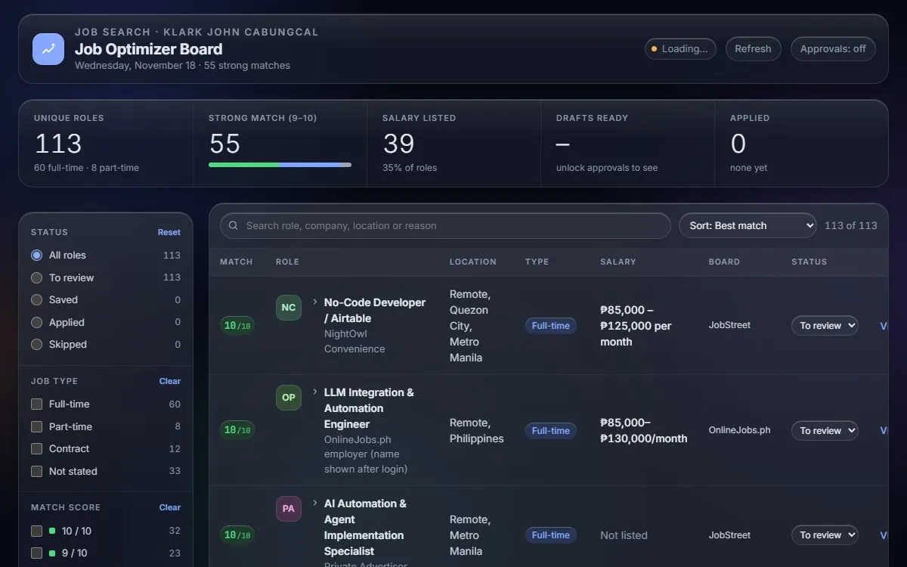

- Reads the portfolio: The agent pulls this page's text (with a cached copy as a fallback) and works out which roles genuinely fit my skills and experience.
- Searches five boards: JobStreet, Kalibrr, OnlineJobs.ph, Jobicy and Arbeitnow, limited to remote roles that candidates in the Philippines can apply for. Boards that charge job seekers to apply are left out.
- Scores every role: Each listing gets a 1-10 match score, a one-line reason and its job type; only roles scoring 6+ are kept.
- Drafts the application: For roles scoring 8+, an hourly workflow writes a tailored cover letter, a “why me” summary and availability, with my resume and a short video intro.
- I approve, then it sends: On the live board I review, edit and approve each draft. Approved applications go out from Gmail with the resume PDF attached; nothing is sent without my click.
- Watches itself: A health monitor checks the feed, AI models, Gmail, the resume file and the draft builder three times a day and alerts Slack only when something breaks.
- One live board with every matching role, its score, salary, job type and board, filterable and searchable
- Applications drafted for me, so applying takes a review and a click instead of an hour of writing
- Duplicate listings merged across boards, and every role tracked as to review, saved, applied or skipped
- A backup AI model takes over when the main one is busy, so runs don't fail on free-tier limits
Automated Recruiting Tracker & Interview Scoring
An automated hiring pipeline that replaces manual candidate spreadsheet-tracking and first-pass interview screening. It captures every application the moment someone applies, scores every interview against its transcript consistently, and gives a single live dashboard showing the whole pipeline at a glance.


- 1. Application capture: A candidate applies via a Jotform application (name, email, role, source, resume). Within seconds they appear in the Candidates sheet and dashboard as “Applied” (or “Interview Scheduled” if a date was included), fully automatic, zero manual entry.
- 2. Interview conducted normally (Zoom/Meet with a Fireflies bot recording). Once Fireflies finishes transcribing, it reaches the same tracking workflow used for sales calls, which checks whether the transcript is an interview or a sales call and routes accordingly by matching the candidate's email: no manual step.
- 3. AI interview scoring: Claude scores the interview against the transcript (a 1-10 score, a recommendation of Strong Yes / Yes / Maybe / No, strengths, concerns and a summary), written back to the candidate's row automatically, flipping their stage to “Interviewed.”
- 4. Live dashboard: A two-tab dashboard (Pipeline overview + searchable Candidates table) rebuilds itself automatically on every change, filterable by stage or recommendation, searchable by name/email/role, with click-through to resumes and transcripts.
- 5. Unattended safety net: Every 30 minutes, the system checks for any candidate whose interview happened over 24 hours ago with no matched transcript, flags them for Manual Review, and emails an alert, so a missed match never just quietly disappears.
- Manually entering candidates into a spreadsheet
- Re-listening to interviews to write a summary
- Rebuilding or refreshing the pipeline dashboard by hand
- Chasing down whether a transcript actually got matched to the right person
- The AI produces a screening aid, not a hiring decision: a person still reads the score/summary and decides who advances
- Scope boundary is deliberate: there's no automated offer/rejection flow past the “Interviewed” stage
Instagram DM Lead Tracking & Booking Matching
A real client project currently in progress, connecting Instagram DM conversations (via ManyChat) to a lead-tracking sheet, and matching those DM leads back to actual Calendly bookings, so a business can see the full path from “commented/DM'd” to “booked a call” in one place instead of two disconnected systems.


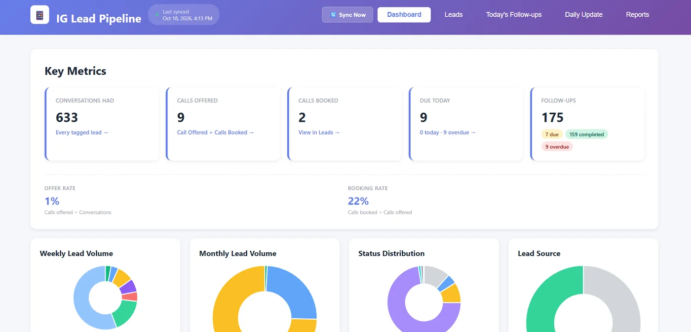
- Lead-tracking sheet: The source of truth for captured DM leads.
- ManyChat tag capture: Captures ManyChat tags and creates or updates the corresponding lead record automatically.
- New conversation logger: Logs each new Instagram DM conversation as a lead record.
- Calendly sync: Matches booked calls back to the original DM lead using the Instagram handle.
- Follow-up and daily update workflows: Scheduled workflows that keep lead status current and surface leads needing follow-up.
- Dashboard and reports: A live view of leads and reporting, rebuilt from the same lead sheet.
- ManyChat automation build: Tags, a “setter” field, and the DM-side automations inside ManyChat itself.
- Instagram Business connection: Linking the client's Instagram account to ManyChat so DM conversations flow into the system.
- Booking-to-DM matching: Adding an “Instagram handle” field to the client's existing Calendly form (non-disruptive to the current form) so a booked call can be matched back to the original DM lead that generated it, closing the loop from first contact to booked appointment.
Support Inbox → AI Triage
A three-workflow n8n system that reads incoming support email, classifies and drafts a reply with Gemini, and only ever sends after a human approves. Built and validated end-to-end: 3 workflows, 31 total nodes, Gemini 2.5 Flash, 0 errors / 0 warnings on validation, ~2 hours build time. Currently inactive pending go-live.
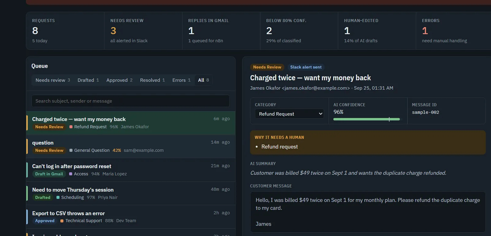
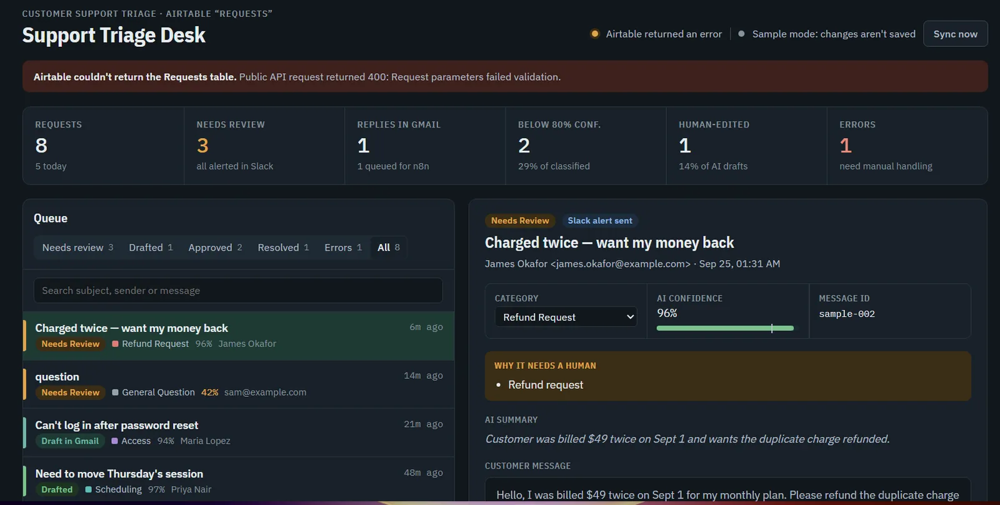
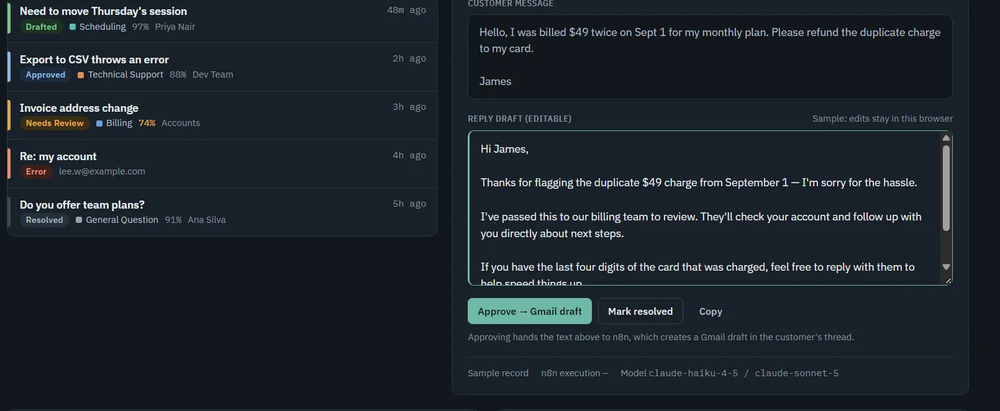
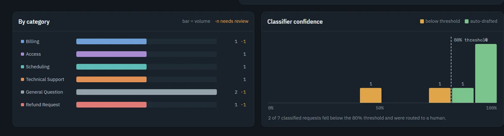


- 1. Gmail Trigger fires on new inbox mail: a standard polling trigger, no webhook to expose or maintain.
- 2. Prompt Config stamps every editable setting onto the item: which two Gemini models to use, the 0.8 confidence threshold, the company name/signature, and both full system prompts. Nothing below this node has a hard-coded prompt: everything reads from here.
- 3. Normalize Message strips quoted reply chains, collapses whitespace, and caps the body at 8,000 characters before it reaches a model, also extracts a clean message ID, thread ID, sender info, and subject.
- 4. Skip Already-Processed Emails de-duplicates on message ID against the last 10,000 items seen, across executions, not just within one run.
- 5. Process One at a Time (batch size 1) isolates each email so one bad message can't take the rest of the batch down, and keeps Gemini calls well under rate limits.
- 6. Create Log Record upserts an Airtable row at Status = Processing before any AI call runs: this is what makes crash-recovery work.
- 7. Classify Request: Gemini 2.5 Flash at temperature 0, constrained by a structured-output schema (with auto-fix) to exactly one of 6 categories, a 0-1 confidence score, a boolean needs_human_review, a reason, and a one-line summary.
- 8. Draft Reply: Gemini 2.5 Flash at temperature 0.4, writes the reply using the classification, the original email, and the editable signature.
- 9. Evaluate Flags computes why (if at all) this needs a human: confidence below threshold, category is Refund Request, or the model's own needs_human_review.
- 10. Save Triage Result writes category, confidence, summary, draft, and status back onto the same Airtable row.
- 11. Branch on Needs Human Review?: flagged rows post to #support-triage in Slack with a deep link straight to the Airtable record; clean rows just loop to the next email.
- 12. Separately, once a person sets a row's status to Approved in Airtable, a scheduled workflow (polling every minute) creates a real Gmail draft (it never sends) and flips the row to “Draft in Gmail” so it can't be drafted twice.
- 13. Independent of all of the above, a dedicated error-alert workflow sits on an Error Trigger and pings Slack with the workflow name, failed node, error, and execution link if the main workflow ever crashes outright.
- Human-in-the-loop, not human-on-the-loop: the AI never sends anything. It proposes a category and a draft; a person approves in Airtable; only then does a real Gmail draft get created, and even that still needs a human to hit send.
- Three workflows, three triggers: triage (event), drafting (schedule), and crash-alerting (failure) are different concerns on different clocks. Each can be tested, paused, or changed without touching the others.
- One place to edit the AI: every model name, threshold, and prompt lives in a single Prompt Config node: a non-engineer can retune tone or swap models without opening an expression.
- Structured output over free text: the classifier is contractually forced into 6 known categories with a numeric confidence, so routing logic reads real fields instead of parsing prose.
- Two temperatures, two jobs: 0 for classification: repeatable, boring, correct. 0.4 for drafting: natural-sounding without wandering off the brand voice.
- Airtable as the shared spine: one Status field that all three workflows read and write is the entire coordination mechanism: no queue, no extra database, easy for a human to audit by eye.
- Duplicate / re-triggered emails: cross-execution dedup on message ID, plus the log write is an upsert keyed on the same field, so a re-run can't create a second row.
- Low-confidence or ambiguous classification: anything under the 0.8 threshold routes to Needs Review regardless of category.
- Refund requests: always routed to Needs Review, even at high confidence, because money leaving the business gets a standing human check.
- Angry, legal, security, or churn-risk emails: the classifier prompt itself lists these as explicit needs_human_review triggers.
- Long emails / quoted thread history: body is stripped of quoted replies and capped at 8,000 characters before it reaches the model.
- Missing sender name: falls back to “unknown” rather than breaking the prompt template.
- A single email fails AI or Airtable: retried 3× with backoff, then isolated: that one row is marked Error with the real error text and Slacked, while the batch-of-1 loop keeps going.
- The whole workflow crashes (bad credential, n8n restart mid-run): the separate Error Trigger workflow still fires and pings Slack, catching what the per-item handling above can't.
- Double-drafting an approved reply: the draft-sender flips status to “Draft in Gmail” the moment it succeeds, so the next minute's poll skips it.
- Swap the placeholder identity for the real client's name and signature: a one-field change in Prompt Config.
- Calibrate the 0.8 confidence threshold and the 6-category taxonomy against a batch of real historical tickets instead of intuition.
- Build a small labeled eval set for the classifier so future prompt or model changes are regression-tested, not eyeballed.
- Make replies thread-aware: a reply on an existing thread currently opens a brand-new logged request instead of linking back via thread ID.
- Move the draft-sender off a 1-minute poll onto an Airtable-automation webhook, so approved replies go out the moment they're approved.
- Add a fallback model or provider for the two Gemini calls so a provider outage doesn't stall the inbox.
- At real ticket volume, weigh Airtable-as-system-of-record against a dedicated helpdesk tool for SLAs and multi-agent assignment.
Website Opportunity Finder: AI Audit → CRM → Outreach
A lead engine I run for my own business. It picks the next industry and Texas city, finds businesses that have a website, reads each site, and has an AI score how much help it needs (missing online booking, no chat, no lead capture). Strong leads land in a Google Sheet, Slack and HubSpot, and an outreach email that names the real gap on their site is written, safety-checked and queued. Separate workflows send the queue in Texas business hours, read the replies, and send one follow-up in the same thread.
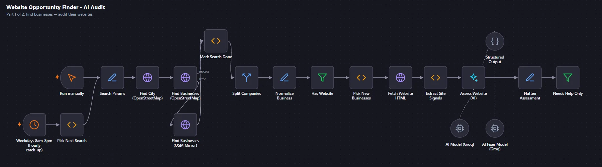
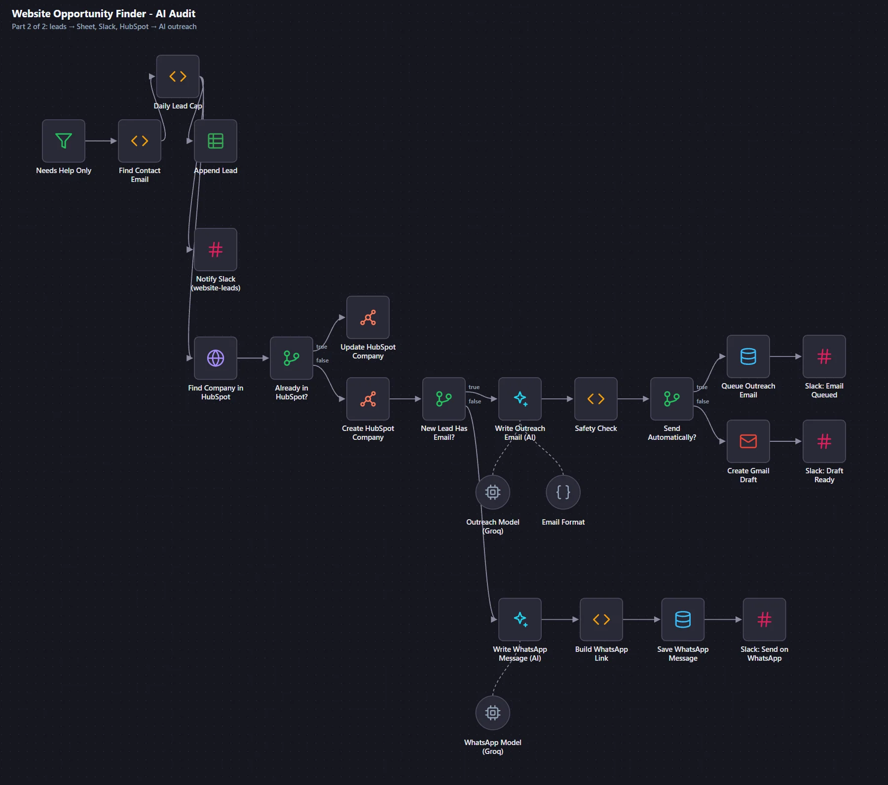
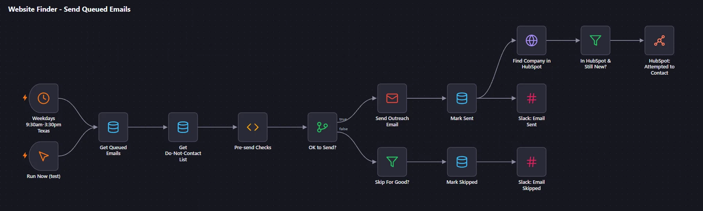
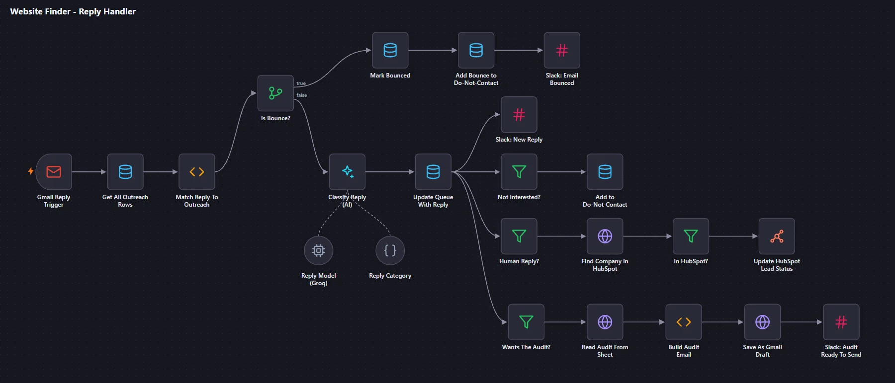
- 1. Pick the next search. An hourly weekday schedule rotates through 10 industries across Austin, Dallas and San Antonio, and stops for the day once it has 10 leads that have an email address.
- 2. Find businesses for free. OpenStreetMap (Nominatim for the city, Overpass for businesses) instead of a paid lead database, with a mirror server as a fallback because the free servers are sometimes down.
- 3. Skip what is not worth auditing: chains and franchises, duplicate domains, and anything audited on an earlier day.
- 4. Read the website. A Code node pulls signals from the HTML: booking tools (by vendor), chat widgets (by script domain), real forms, and same-site booking pages.
- 5. AI audit. A Groq model returns a structured score and the single biggest gap, with a strict scoring scale so it does not rate every site 9–10.
- 6. Save the lead to Google Sheets (no duplicates), post it to Slack, and create or update the company in HubSpot with Lead Status New.
- 7. Write the outreach. The AI writes a short email about that site’s real gap; a safety check blocks anything that breaks the rules before it is queued. Leads with no email get a WhatsApp message and click-to-chat link in Slack instead.
- 8. Send, read, follow up. The sender works through the queue in Texas business hours; the reply handler classifies each reply (interested, question, not interested, auto-reply) and updates HubSpot; one follow-up goes out after 4 days, in the same Gmail thread.
- Never email the wrong people: a do-not-contact list (opt-outs and bounces are added automatically), an MX check on every domain, and a hard daily send limit.
- AI misread a site: the first real batch showed the audit missed booking forms loaded by JavaScript on 4 of 6 sites. I added vendor detection and “verified facts” that override the AI before any email is written.
- Bot-protection pages (Cloudflare “Just a moment”) are marked as blocked, not as “site down”.
- Rate limits: AI calls run one at a time with a delay to stay inside the free tier; HubSpot searches are throttled after a 429 in testing.
- Missed runs: n8n runs on my PC, so schedules repeat hourly with a once-per-day guard and only mark a search done after it succeeds.
- Leads with no way to contact them are removed automatically after 23 hours.
- Any crash triggers a separate Error Trigger workflow that posts the failed node and error to Slack.
AI Chat Assistant for This Website
A website assistant that answers questions about my services, never invents prices, asks one follow-up question, and offers the free audit. Answers come only from a fixed list of business facts written into the prompt. Because n8n runs on my own PC, a Cloudflare Worker sits in front: it keeps the chat answering 24/7 and holds leads in a queue when n8n is offline, retrying every 15 minutes.
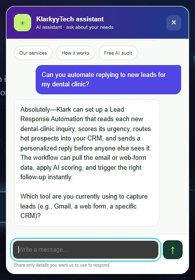
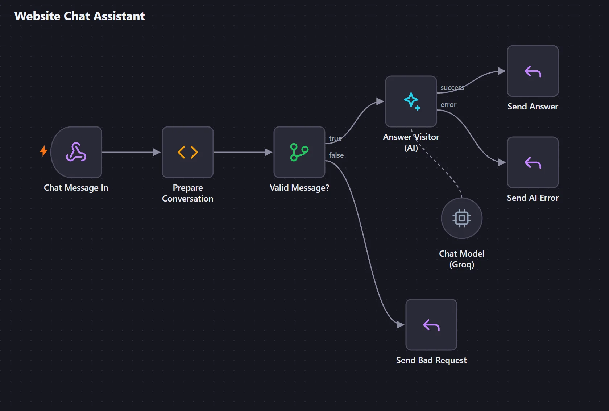
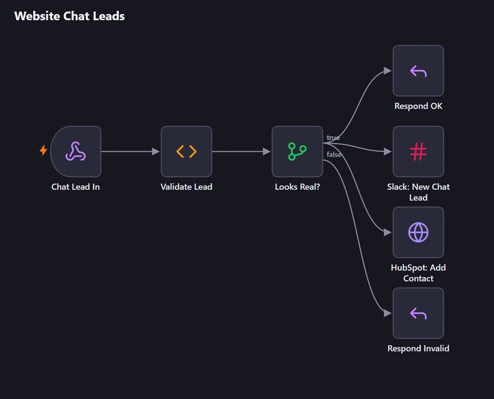
- Facts, not guesses: the assistant may only use the business facts in its prompt, so it cannot make up prices, clients or services.
- Clear failure answers: a bad request and an AI error each get their own response instead of a hanging chat.
- Spam filter before the CRM: leads are validated before anything reaches Slack or HubSpot.
- Always on: the Worker answers even when my PC is off, and no lead is lost while n8n is down.
- Read the business facts from one shared file at run time instead of copying them into the prompt.
- Log questions the assistant could not answer, to find gaps in the website.
Reels Maker: Long Video → Captioned Vertical Reels
A small production line for short-form video. Whisper transcribes the audio with word timings; a language model picks self-contained moments and writes a hook; a vision model looks at frames to decide whether to crop on a speaker’s face or fit the frame on a blurred background. Captions show 2–3 words at a time with the current word highlighted.
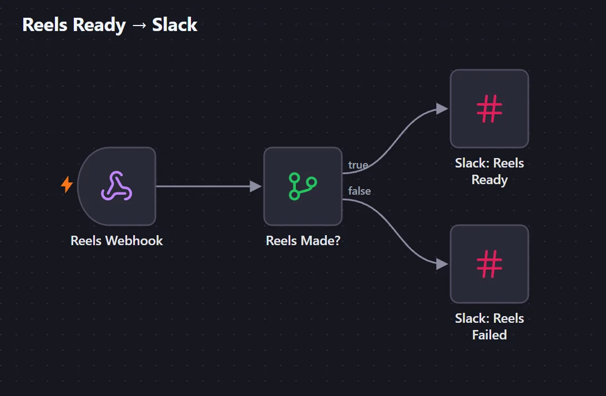
- Files stay out of n8n: recent n8n versions turn off Execute Command and the local file trigger by default, and my n8n is reachable from the internet, so the file work runs in a local script and n8n only handles the notification.
- Free models with fallbacks: each AI step goes through my own model gateway, which falls back to another provider if one is down.
- Success and failure both report: the Slack message says which reels were made, or why a video failed, and the source file is moved to done or failed.
- Test the face-crop path on more real talking-head footage.
- Post approved reels straight to Instagram, TikTok and YouTube Shorts.
WhatsApp AI Auto-Reply + Mini CRM
An AI receptionist for WhatsApp with its own CRM. The CRM is three n8n Data Tables: Contacts (stage, interest, message count, needs-human flag), Messages (every message in and out) and Business Info (the FAQ the agent answers from). The business edits answers in a table, not in a prompt.
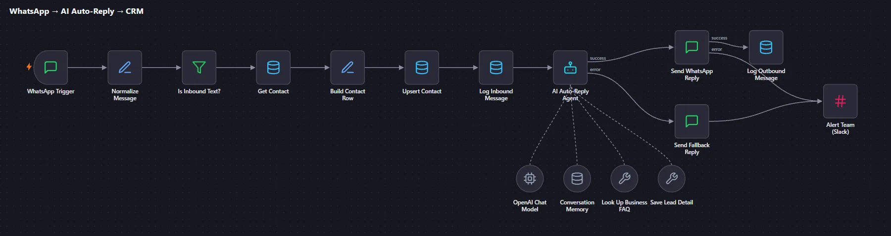
- Answers come from a table: the agent looks up the Business Info table, so changing an answer needs no workflow edit.
- Remembers each customer: conversation memory is keyed on the WhatsApp number (last 30 messages).
- Captures leads as it chats: a tool lets the agent save a name, email or interest to the contact row.
- Never silent: if the AI fails, the customer still gets a polite fallback reply, and the team is alerted in Slack.
- Make “save lead detail” update only the fields it learned, so a blank value can never overwrite an earlier one.
- Hand the chat to a person when a contact is flagged “needs human”.
Submariner Concept
An unofficial design concept for the Rolex Submariner Date (not affiliated with Rolex). The page is one scroll-driven 3D story, and the watch itself is modelled entirely in code, with no 3D model files.
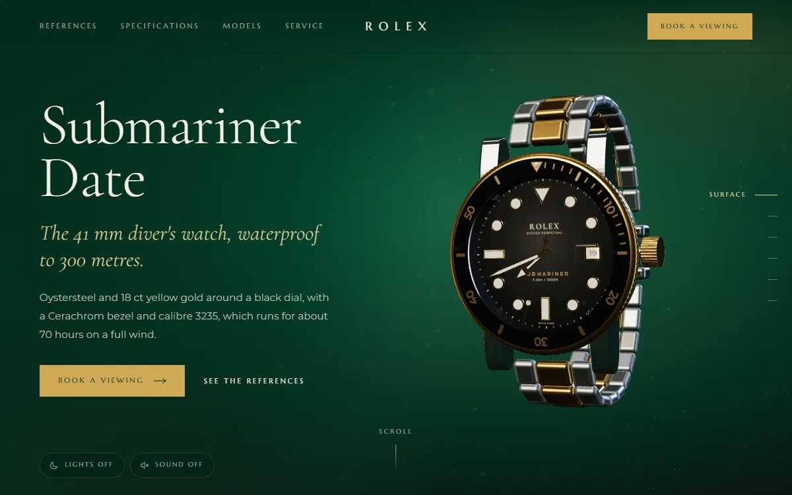
- The watch is built in code: a working bezel, live hands set to the visitor's time and a bracelet of linked parts
- Scroll moves through five chapters (surface, bezel, dial, case, references), then the watch turns a full circle beside the spec sheet
- Drag the bezel to turn it in 120 clicks, switch the lights off to see the blue lume glow, and try a wrist-size fit check
- A drawn movement with a swinging rotor, eight model tiles whose dials keep real time, and a heritage timeline
- Green, gold, noir and ivory palette; optional generated sound; works on phones
Visit live site ↗ See all websites ↗
Vibetyper
A one-page launch site for a fictional wireless Mac keyboard. The whole page is one scroll-driven 3D film of the product, built entirely in code, from the inside of the board out to the final call to action.
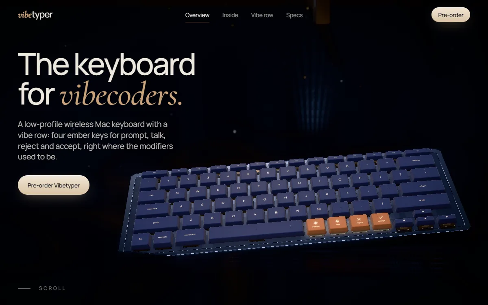
- Opening camera flight through the inside of the keyboard while the keycaps drop into place
- Scroll splits the keyboard into its 7 layers, with labels that follow each part
- The four copper “vibe” keys light up in turn, then the accept key comes apart into cap, switch, spring and light
- Luxury tech stage in a complementary cobalt and copper palette: blue anodised keyboard, a light ring with radar pulses on a gridded reflective floor, and a spiral galaxy of stars orbiting the board
- Slow 10-second cinematic loop with camera orbit and push-in; keys rise under the cursor; works on phones
Visit live site ↗ See all websites ↗
The City
A scroll-driven 3D film about the fifth-generation Honda City sedan, made from one real rain-soaked photo. Scrolling moves one camera through nine chapters, from the headlights to a fade to black. Unofficial fan demo, not affiliated with Honda.
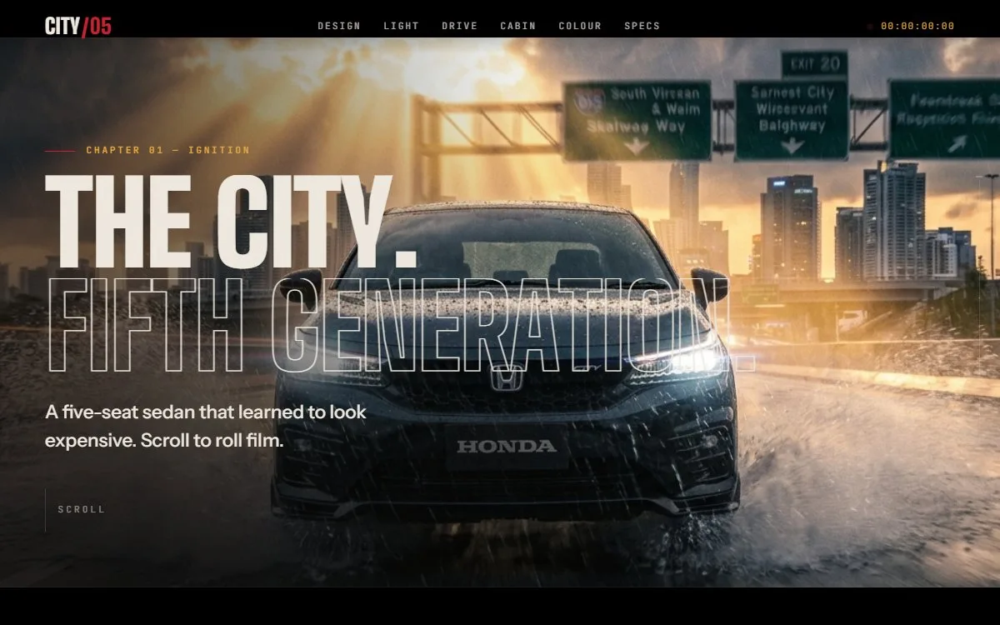
- A real rain-soaked highway photo turned into a 3D scene with an AI depth map, so the camera can move around the car
- Scroll moves the camera through 9 chapters, and the scene also follows the mouse
- Film look: letterbox bars, grain, chapter title cards and a live timecode
- Colour-grade picker to restyle the scene, counting stats and a full spec sheet; works on phones
Visit live site ↗ See all websites ↗
KlarkyyTech
The website for my own AI automation business, KlarkyyTech: a calm, professional site that explains what I automate, shows sample projects and turns visitors into conversations.
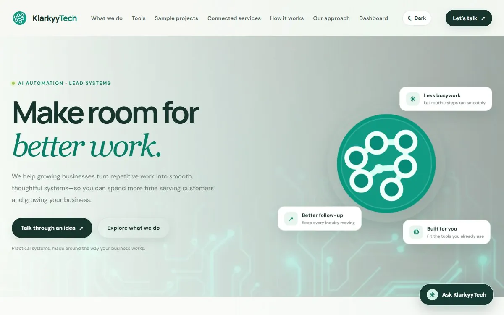
- AI website assistant that answers visitors' questions about the business live, with suggested questions
- Light and dark theme switch, plus scroll slide-in motion and a reading progress bar
- Services, tools, sample projects, connected services and a step-by-step “how it works”
- Contact by email or WhatsApp, and a link to the live lead dashboard
Visit live site ↗ See all websites ↗
FlameBite
A cinematic one-page site for an upscale craft-burger restaurant, built around a scroll-driven 3D film. Demo website with sample content.
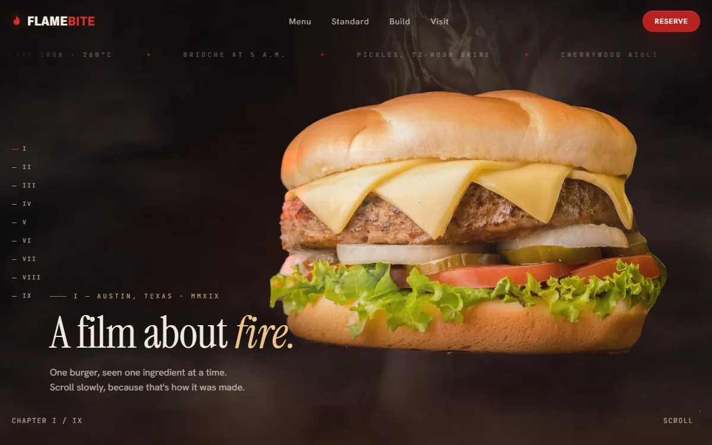
- Scroll film: a real-photo 3D burger explored ingredient by ingredient, with camera moves and live smoke
- Build Your Own: a 3D burger builder with live price and calories; menu burgers load straight into it
- Signature menu with layer-by-layer previews, full-screen mobile menu and visit details
- Lazy-loaded 3D, a static fallback, share previews and restaurant info for Google
Visit live site ↗ See all websites ↗
CoreTech
A premium tech store for gaming laptops, desktop PCs, components and accessories, built across 6 pages. Demo website with sample content.
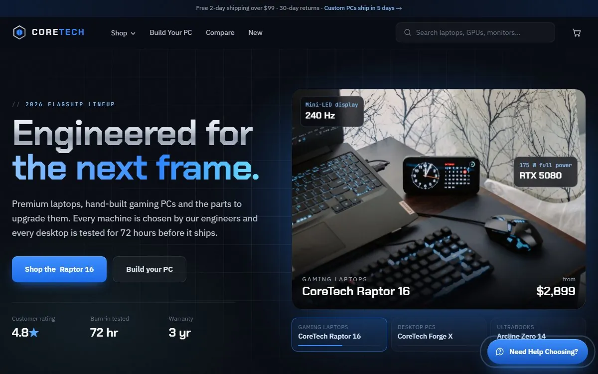
- Interactive 3D hero scene, particle effects and smooth page transitions
- Advanced filters: brand, processor, RAM, storage, screen size, price and use
- Build Your PC configurator with live compatibility, wattage and FPS checks
- Compare up to 3 products side by side, with the best specs highlighted
Visit live site ↗ See all websites ↗
Apex Motors
A motorsport-styled dealership website for luxury, performance and electric cars, built across 7 pages. Demo website with sample content.
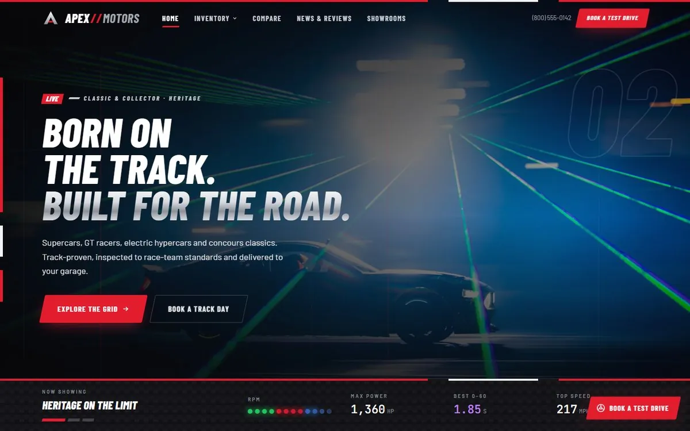
- Inventory with filters for brand, price, fuel, body style and year
- Vehicle pages with photo gallery and finance calculator
- Compare up to 3 cars side by side
- Test-drive booking and showroom locator
Visit live site ↗ See all websites ↗
Apex Athletics
A bold, mobile-first online store for training gear and footwear, with its forms wired into an n8n automation backend. Demo website with sample content.
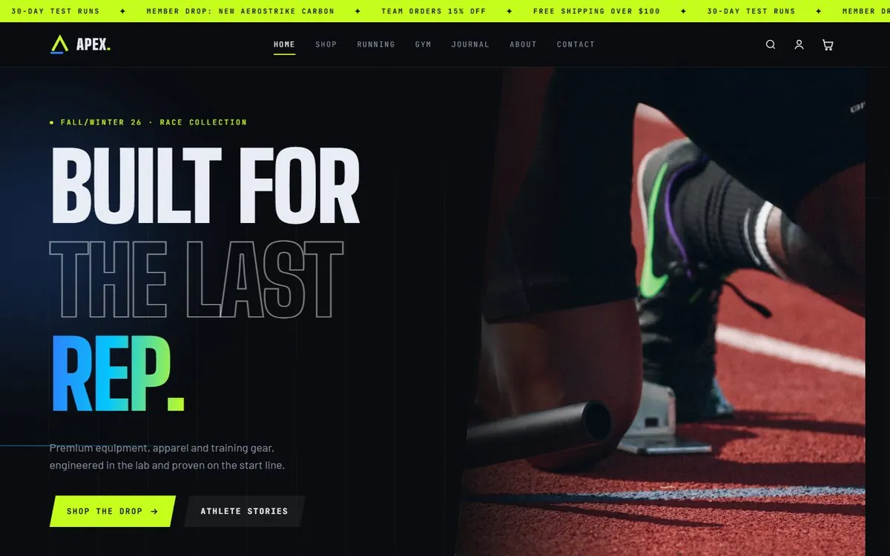
- Shop by sport and category, product pages, cart and checkout
- Contact and checkout forms connected to an automation backend (n8n)
- Orders and messages saved to a database automatically
Visit live site ↗ See all websites ↗
PeakCap Co.
A streetwear store for snapbacks, dad hats and truckers, with a live cap customizer. Demo website with sample content.
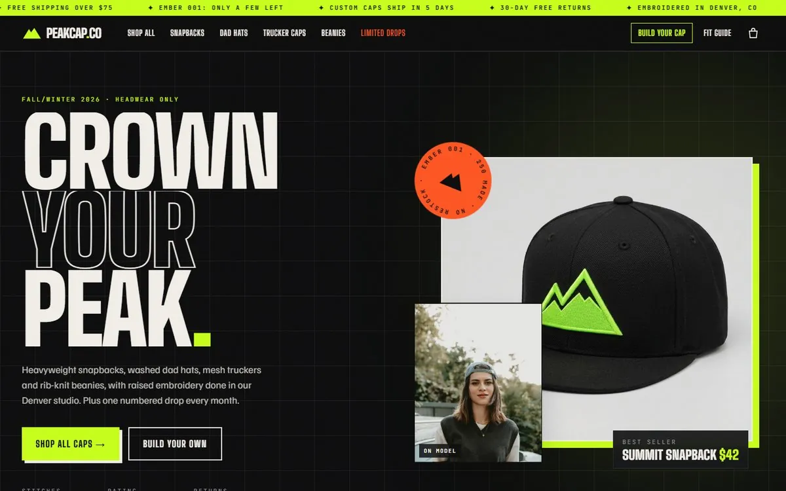
- Live cap customizer: pick colours and logo, see it instantly
- Every colour option is shown on the product
- Fit guide, cart and promo codes
Visit live site ↗ See all websites ↗
Thread & Form
A workwear store with jackets, shirts and pants from eleven labels. Demo website with sample content.
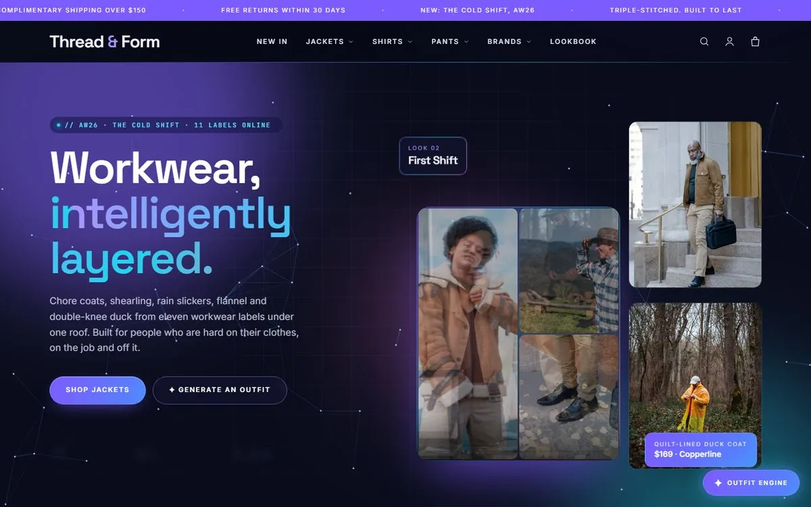
- Shop by brand and category
- Lookbook of complete outfits
- Product pages, cart and promo codes
Visit live site ↗ See all websites ↗
SoleForge
An online shoe store for everyday, athletic and street footwear. Demo website with sample content.
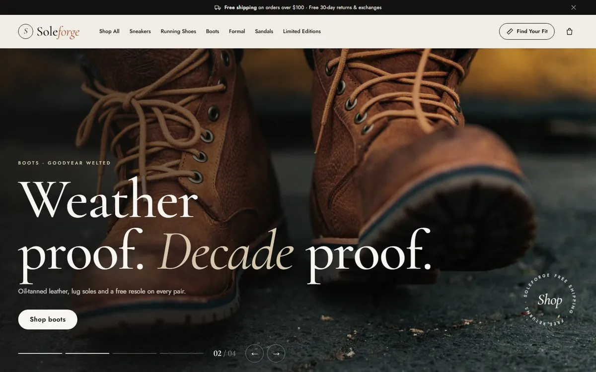
- Shop by category and size
- Product pages with size selection
- Cart that remembers your items
Visit live site ↗ See all websites ↗
Dashboards
Live dashboards I've built on top of n8n automations. Client dashboards are demo copies with sample data, so client information stays private.
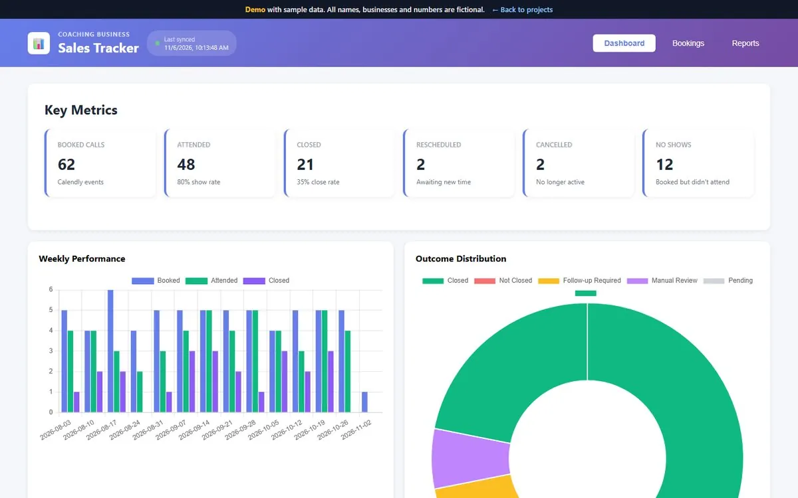
Demo ↗Sales Call Tracker
Tracks every booked sales call: who showed up, who bought, and how the month compares.
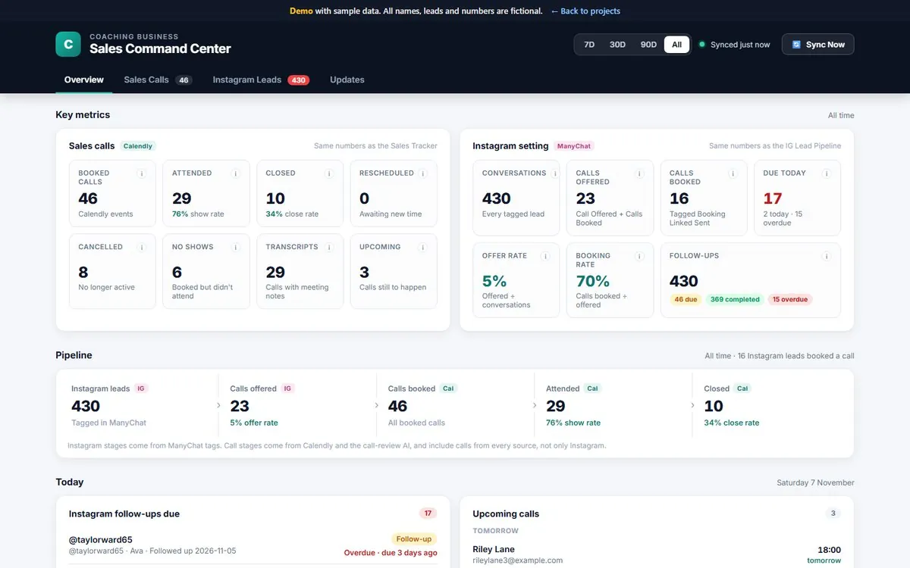
Demo ↗Sales Command Center
Instagram DM leads and booked sales calls side by side, from first DM to closed deal.
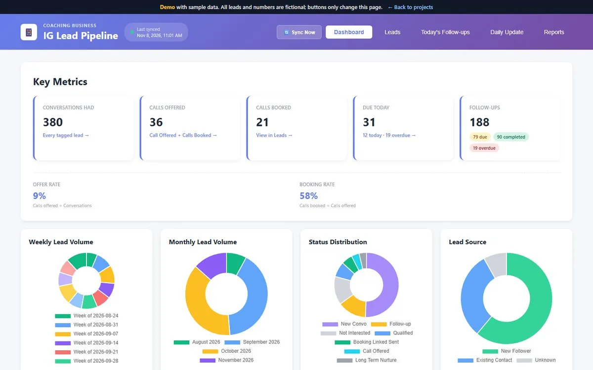
Demo ↗IG Lead Pipeline
Tracks every Instagram DM lead a setter team works in ManyChat, from first message to booked call.
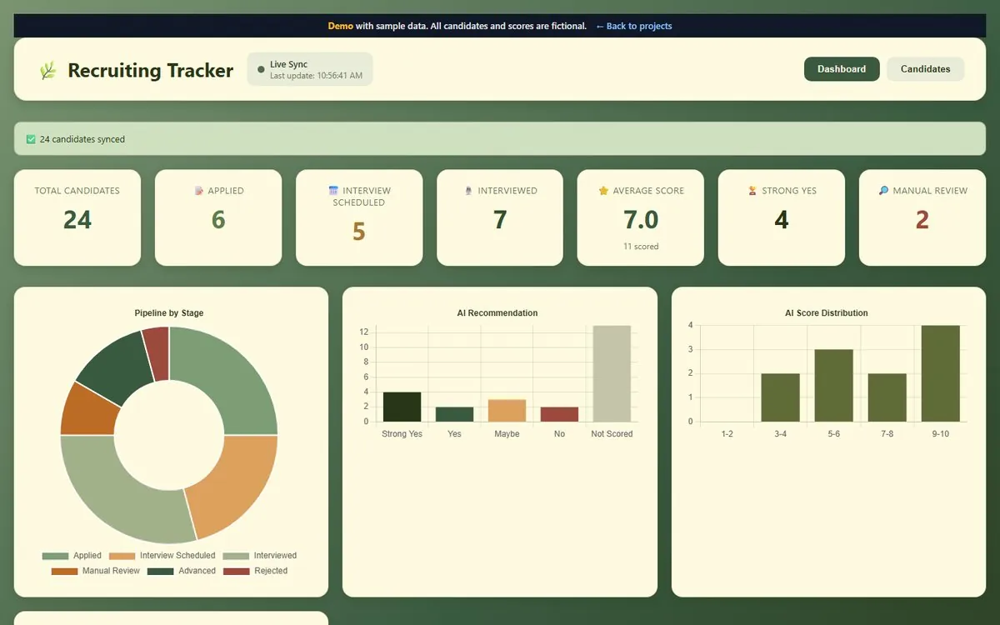
Demo ↗Automated Recruiting Tracker & Interview Scoring
Logs every application automatically and scores every interview from its transcript.
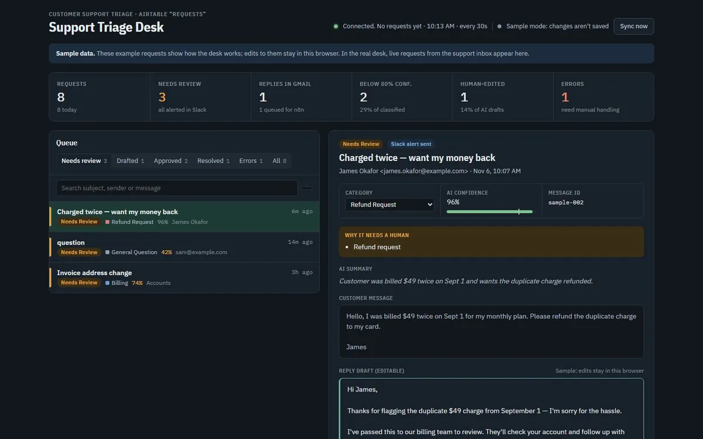
Demo ↗Support Triage Desk
Sorts incoming support emails with AI and drafts a reply for a person to check and send.
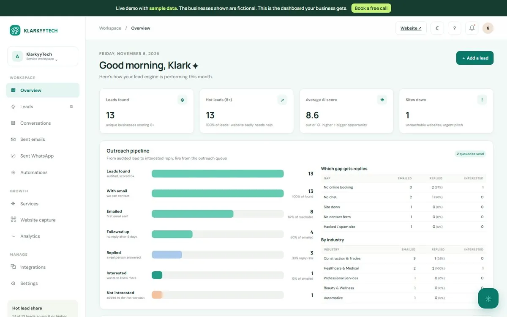
Demo ↗Lead Intelligence
Finds local businesses with weak websites, scores them with AI and runs the email outreach.
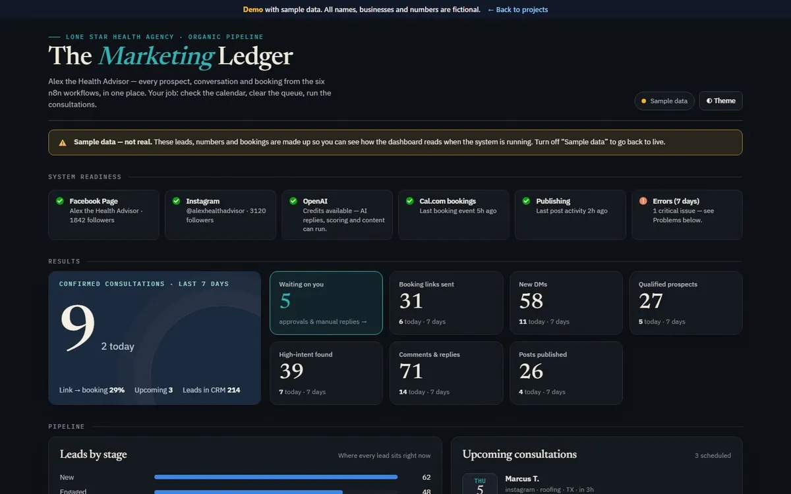
Demo ↗Marketing Ledger
One screen for an agency’s organic social marketing: posts, DMs, leads and booked consultations.
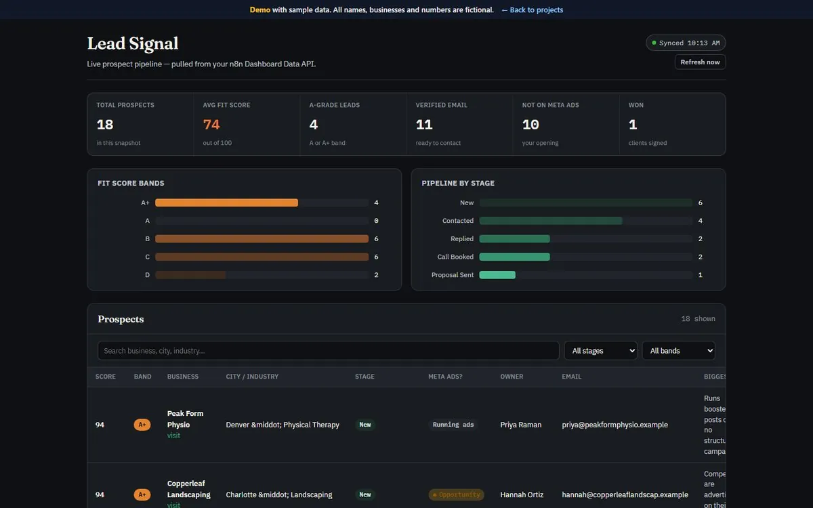
Demo ↗Lead Signal
Ranks prospects for a Meta ads agency by how much they would gain from running ads.
Job Optimizer Board
An AI agent searches five job boards, scores every role against my portfolio and drafts the applications for me to approve.
Websites
Multi-page sites I've designed and built, all live. Click any site to open it.
Submariner Concept
Code-built 3D watch, turnable bezel, lume mode
submariner-concept.pages.devVibetyper
Scroll-driven 3D product film, 7-layer teardown
vibetyper.pages.devFlameBite
3D scroll film, live smoke, burger builder
flamebite.pages.devThe City
Real photo turned 3D, scroll camera, film look
honda-city-2018.pages.devKlarkyyTech
AI assistant, light/dark theme, scroll motion
klarkyy00.github.io/Klark_portfolio/klarkyytechCoreTech
3D hero, PC builder, compare tool
coretech-1n9.pages.devApex Motors
Inventory filters, finance calculator, test-drive booking
apex-motors-2zr.pages.devApex Athletics
Checkout and contact form wired to n8n
apex-athletics.pages.devPeakCap Co.
Live cap customizer, fit guide, promo codes
peakcap.pages.devThread & Form
Shop by brand, outfit lookbook, promo codes
thread-and-form.pages.devSoleForge
Shop by category and size, saved cart
soleforge.pages.devAbout Me
I'm Klark John Cabungcal, an automation engineer and technical operations specialist. For over 6 years, I've operated and maintained the SCADA-controlled Baggage Handling System at NAIA Terminal 3, across four employers on the same critical infrastructure (BEUMER Group, MSV Construction, Xplore Phil. Inc., and currently Levlar), monitoring sorter status, diagnosing conveyor and check-in faults, and keeping a real, high-stakes system running.
In parallel, I taught myself n8n, Make.com, and Zapier, got certified in all three, and started building AI-integrated automations that connect CRMs, forms, and messaging platforms into workflows that run unattended. I got into it because I kept noticing the same pattern in both worlds, industrial and digital: repetitive processes that break down when a human has to remember every step, and reliable systems when the process is built right the first time.
I also run KlarkyyTech, my AI automation business, where small businesses can see what I build for them and get in touch.
I'm currently open to freelance automation projects and full-time opportunities. If you have a repetitive process eating up your team's time, I'd like to hear about it.
How I Can Help
Common automations businesses need most, each adaptable to your specific process and tools.
Lead Response Automation
AI reads and scores inbound leads the moment they arrive, routes hot leads to your CRM instantly, and sends a reply before anyone else does.
Booking & Scheduling Automation
Customers book real availability instantly through a form, no back-and-forth emails, with automatic confirmations or alternative time offers.
Invoice & Payment Follow-Up
Invoices get tracked automatically, reminders fire on schedule, and overdue notices only go out after a fresh payment status check.
AI Customer Support Automation
AI reads, classifies, and drafts replies to support emails, flags anything sensitive for a human, and logs everything for tracking.
Client Pipeline / Lightweight CRM
One spreadsheet becomes your control panel: update a status, and quoting, onboarding, and follow-up emails all fire automatically.
Custom AI + API Integration
No native connector for a tool you rely on? I build direct API/webhook integrations with proper auth, retries, and error alerts.
AI Website Chat Assistant
A chat assistant that answers your visitors' questions 24/7 from your own business info, captures leads, and alerts you instantly. Try the one on this page.
Lead Generation & Cold Outreach
I find local businesses, audit their websites with AI, and send each one a personal email about its specific gap, with follow-ups, reply sorting, and opt-outs handled.
See a live demo →Sales Call Tracking Dashboard
Every booked call and recording becomes live numbers (show rate, close rate, no-shows, setter performance) with zero manual entry.
Automation Care Plan
Monthly monitoring of your automations: error alerts, quick fixes, and small improvements, so nothing breaks silently.
How We'd Work Together
A simple, predictable process from first message to a working automation.
Discovery Call
A short call (or async chat) to understand the manual process, where it breaks down, and what “done” actually looks like.
Proposal
A clear scope, timeline, and cost: no surprises, no vague “let's see how it goes.” You know exactly what you're getting.
Build & Test
The automation gets built with error handling and edge cases in mind from day one, then tested against real scenarios before delivery.
Handoff & Support
You get documentation on how it works, and I stay available to fix anything that breaks or adjust as your process evolves.
Certifications & Trainings
AI Automation with n8n
HighLevel CRM Full Training
No Code Automation with Make.com
No Code Automation with Zapier
Prompt Engineering Full Training
Technical Drafting NCII
Electrical Installation and Maintenance NCII
Common Questions
Things people usually wonder before reaching out.
What if I don't know exactly what I need automated?
How long does a typical project take?
What if something breaks after you're done?
Do you work with businesses outside the Philippines?
What if I already have an automation that's not working well?
How much does a project cost?
Will it work with the tools I already use?
Still deciding? Book a free 30-min call
Book a Free 30-Min Call
Let's talk through what you need automated: no pressure, just a quick conversation about your process and whether I'm a good fit to help.
Klark John Cabungcal
- Walk me through one process that eats your team's time
- I'll tell you whether it can be automated and roughly what it takes
- No pitch, no obligation
Opens my Calendly calendar right here.
Calendar not loading? Open my booking page ↗ or email kj_klark@yahoo.com
Let's Collaborate
Ready to automate your business? Get in touch and let's discuss your project.